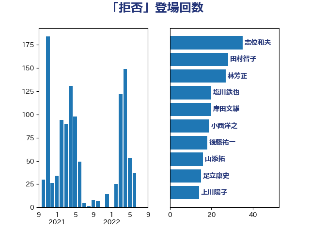

単語「拒否」

| 志位和夫 | 日本共産党 | 35 回 |
| 田村智子 | 日本共産党 | 28 回 |
| 林芳正 | 自由民主党 | 27 回 |
| 塩川鉄也 | 日本共産党 | 20 回 |
| 岸田文雄 | 自由民主党 | 20 回 |
| 小西洋之 | 立憲民主党 | 19 回 |
| 後藤祐一 | 立憲民主党 | 18 回 |
| 山添拓 | 日本共産党 | 16 回 |
| 足立康史 | 日本維新の会 | 15 回 |
| 上川陽子 | 自由民主党 | 14 回 |
| 田村憲久 | 自由民主党 | 14 回 |
| 穀田恵二 | 日本共産党 | 14 回 |
| 福山哲郎 | 立憲民主党 | 13 回 |
| 逢坂誠二 | 立憲民主党 | 12 回 |
| 伊波洋一 | 無所属 | 11 回 |
| 宮本徹 | 日本共産党 | 11 回 |
| 柚木道義 | 立憲民主党 | 11 回 |
| 福島みずほ | 社会民主党 | 11 回 |
| 青柳仁士 | 日本維新の会 | 11 回 |
| 小池晃 | 日本共産党 | 10 回 |
| 打越さく良 | 立憲民主党 | 10 回 |
| 磯崎仁彦 | 自由民主党 | 9 回 |
| 高橋千鶴子 | 日本共産党 | 9 回 |
| 杉尾秀哉 | 立憲民主党 | 8 回 |
| 茂木敏充 | 自由民主党 | 8 回 |
| 階猛 | 立憲民主党 | 8 回 |
| 音喜多駿 | 日本維新の会 | 8 回 |
| 太栄志 | 立憲民主党 | 7 回 |
| 小林鷹之 | 自由民主党 | 7 回 |
| 枝野幸男 | 立憲民主党 | 7 回 |
| 石川大我 | 立憲民主党 | 7 回 |
| 篠原豪 | 立憲民主党 | 7 回 |
| 青山繁晴 | 自由民主党 | 7 回 |
| 高良鉄美 | 無所属 | 7 回 |
| 井上哲士 | 日本共産党 | 6 回 |
| 武井俊輔 | 自由民主党 | 6 回 |
| 渡辺周 | 立憲民主党 | 6 回 |
| 田所嘉徳 | 自由民主党 | 6 回 |
| 芳賀道也 | 国民民主党 | 6 回 |
| 中島克仁 | 立憲民主党 | 5 回 |
| 中谷一馬 | 立憲民主党 | 5 回 |
| 勝部賢志 | 立憲民主党 | 5 回 |
| 寺田学 | 立憲民主党 | 5 回 |
| 川田龍平 | 立憲民主党 | 5 回 |
| 江田憲司 | 立憲民主党 | 5 回 |
| 玉木雄一郎 | 国民民主党 | 5 回 |
| 白石洋一 | 立憲民主党 | 5 回 |
| 石川香織 | 立憲民主党 | 5 回 |
| 道下大樹 | 立憲民主党 | 5 回 |
| 井上信治 | 自由民主党 | 4 回 |
| 大西健介 | 立憲民主党 | 4 回 |
| 宮本岳志 | 日本共産党 | 4 回 |
| 山下芳生 | 日本共産党 | 4 回 |
| 岡本あき子 | 立憲民主党 | 4 回 |
| 徳永久志 | 立憲民主党 | 4 回 |
| 新藤義孝 | 自由民主党 | 4 回 |
| 松原仁 | 立憲民主党 | 4 回 |
| 柴田巧 | 日本維新の会 | 4 回 |
| 田村貴昭 | 日本共産党 | 4 回 |
| 石橋通宏 | 立憲民主党 | 4 回 |
| 舞立昇治 | 自由民主党 | 4 回 |
| 舩後靖彦 | れいわ新選組 | 4 回 |
| 藤田文武 | 日本維新の会 | 4 回 |
| 西村康稔 | 自由民主党 | 4 回 |
| 阿部知子 | 立憲民主党 | 4 回 |
| 高木かおり | 日本維新の会 | 4 回 |
| 佐藤茂樹 | 公明党 | 3 回 |
| 倉林明子 | 日本共産党 | 3 回 |
| 古川禎久 | 自由民主党 | 3 回 |
| 堀場幸子 | 日本維新の会 | 3 回 |
| 大串博志 | 立憲民主党 | 3 回 |
| 奥野総一郎 | 立憲民主党 | 3 回 |
| 小熊慎司 | 立憲民主党 | 3 回 |
| 岩渕友 | 日本共産党 | 3 回 |
| 平井卓也 | 自由民主党 | 3 回 |
| 木村英子 | れいわ新選組 | 3 回 |
| 梅村聡 | 日本維新の会 | 3 回 |
| 水岡俊一 | 立憲民主党 | 3 回 |
| 湯原俊二 | 立憲民主党 | 3 回 |
| 田村まみ | 国民民主党 | 3 回 |
| 笠井亮 | 日本共産党 | 3 回 |
| 緑川貴士 | 立憲民主党 | 3 回 |
| 緒方林太郎 | 無所属 | 3 回 |
| 菅直人 | 立憲民主党 | 3 回 |
| 赤嶺政賢 | 日本共産党 | 3 回 |
| 辻元清美 | 立憲民主党 | 3 回 |
| 青木愛 | 立憲民主党 | 3 回 |
| 高橋光男 | 公明党 | 3 回 |
| 井野俊郎 | 自由民主党 | 2 回 |
| 伊藤岳 | 日本共産党 | 2 回 |
| 原口一博 | 立憲民主党 | 2 回 |
| 吉田宣弘 | 公明党 | 2 回 |
| 吉田統彦 | 立憲民主党 | 2 回 |
| 和田政宗 | 自由民主党 | 2 回 |
| 堀井巌 | 自由民主党 | 2 回 |
| 大塚耕平 | 国民民主党 | 2 回 |
| 小川淳也 | 立憲民主党 | 2 回 |
| 山田俊男 | 自由民主党 | 2 回 |
| 後藤茂之 | 自由民主党 | 2 回 |
| 新垣邦男 | 立憲民主党 | 2 回 |
| 本庄知史 | 立憲民主党 | 2 回 |
| 杉久武 | 公明党 | 2 回 |
| 森田俊和 | 立憲民主党 | 2 回 |
| 横沢高徳 | 立憲民主党 | 2 回 |
| 池田佳隆 | 自由民主党 | 2 回 |
| 泉健太 | 立憲民主党 | 2 回 |
| 浅田均 | 日本維新の会 | 2 回 |
| 浜田聡 | NHK党 | 2 回 |
| 浦野靖人 | 日本維新の会 | 2 回 |
| 清水貴之 | 日本維新の会 | 2 回 |
| 源馬謙太郎 | 立憲民主党 | 2 回 |
| 片山大介 | 日本維新の会 | 2 回 |
| 田島麻衣子 | 立憲民主党 | 2 回 |
| 矢倉克夫 | 公明党 | 2 回 |
| 石垣のりこ | 立憲民主党 | 2 回 |
| 神谷裕 | 立憲民主党 | 2 回 |
| 福島伸享 | 無所属 | 2 回 |
| 羽生田俊 | 自由民主党 | 2 回 |
| 舟山康江 | 国民民主党 | 2 回 |
| 菅義偉 | 自由民主党 | 2 回 |
| 藤巻健太 | 日本維新の会 | 2 回 |
| 谷田川元 | 立憲民主党 | 2 回 |
| 赤澤亮正 | 自由民主党 | 2 回 |
| 赤羽一嘉 | 公明党 | 2 回 |
| 重徳和彦 | 立憲民主党 | 2 回 |
| 野上浩太郎 | 自由民主党 | 2 回 |
| 馬場伸幸 | 日本維新の会 | 2 回 |
| 三原じゅん子 | 自由民主党 | 1 回 |
| 三木圭恵 | 日本維新の会 | 1 回 |
| 下村博文 | 自由民主党 | 1 回 |
| 下野六太 | 公明党 | 1 回 |
| 中川宏昌 | 公明党 | 1 回 |
| 加藤勝信 | 自由民主党 | 1 回 |
| 古屋範子 | 公明党 | 1 回 |
| 古賀之士 | 立憲民主党 | 1 回 |
| 吉川沙織 | 立憲民主党 | 1 回 |
| 吉良よし子 | 日本共産党 | 1 回 |
| 吉良州司 | 無所属 | 1 回 |
| 嘉田由紀子 | 無所属 | 1 回 |
| 国光あやの | 自由民主党 | 1 回 |
| 堤かなめ | 立憲民主党 | 1 回 |
| 塩村あやか | 立憲民主党 | 1 回 |
| 大島敦 | 立憲民主党 | 1 回 |
| 安江伸夫 | 公明党 | 1 回 |
| 室井邦彦 | 日本維新の会 | 1 回 |
| 寺田静 | 無所属 | 1 回 |
| 小宮山泰子 | 立憲民主党 | 1 回 |
| 小沢雅仁 | 立憲民主党 | 1 回 |
| 小沼巧 | 立憲民主党 | 1 回 |
| 山岸一生 | 立憲民主党 | 1 回 |
| 山本香苗 | 公明党 | 1 回 |
| 山谷えり子 | 自由民主党 | 1 回 |
| 岡田克也 | 立憲民主党 | 1 回 |
| 岸信夫 | 自由民主党 | 1 回 |
| 川合孝典 | 国民民主党 | 1 回 |
| 市村浩一郎 | 日本維新の会 | 1 回 |
| 平将明 | 自由民主党 | 1 回 |
| 徳永エリ | 立憲民主党 | 1 回 |
| 掘井健智 | 日本維新の会 | 1 回 |
| 早坂敦 | 日本維新の会 | 1 回 |
| 末松義規 | 立憲民主党 | 1 回 |
| 本村伸子 | 日本共産党 | 1 回 |
| 東徹 | 日本維新の会 | 1 回 |
| 松沢成文 | 日本維新の会 | 1 回 |
| 柿沢未途 | 無所属 | 1 回 |
| 梅谷守 | 立憲民主党 | 1 回 |
| 梶山弘志 | 自由民主党 | 1 回 |
| 森まさこ | 自由民主党 | 1 回 |
| 森山浩行 | 立憲民主党 | 1 回 |
| 榛葉賀津也 | 国民民主党 | 1 回 |
| 横山信一 | 公明党 | 1 回 |
| 櫻井周 | 立憲民主党 | 1 回 |
| 河西宏一 | 公明党 | 1 回 |
| 浅川義治 | 日本維新の会 | 1 回 |
| 浅野哲 | 国民民主党 | 1 回 |
| 浮島智子 | 公明党 | 1 回 |
| 清水真人 | 自由民主党 | 1 回 |
| 熊田裕通 | 自由民主党 | 1 回 |
| 熊谷裕人 | 立憲民主党 | 1 回 |
| 牧原秀樹 | 自由民主党 | 1 回 |
| 田名部匡代 | 立憲民主党 | 1 回 |
| 石井正弘 | 自由民主党 | 1 回 |
| 石井章 | 日本維新の会 | 1 回 |
| 石川博崇 | 公明党 | 1 回 |
| 稲田朋美 | 自由民主党 | 1 回 |
| 竹谷とし子 | 公明党 | 1 回 |
| 米山隆一 | 立憲民主党 | 1 回 |
| 細野豪志 | 自由民主党 | 1 回 |
| 羽田次郎 | 立憲民主党 | 1 回 |
| 自見はなこ | 自由民主党 | 1 回 |
| 若松謙維 | 公明党 | 1 回 |
| 萩生田光一 | 自由民主党 | 1 回 |
| 蓮舫 | 立憲民主党 | 1 回 |
| 藤木眞也 | 自由民主党 | 1 回 |
| 西岡秀子 | 国民民主党 | 1 回 |
| 西村智奈美 | 立憲民主党 | 1 回 |
| 谷合正明 | 公明党 | 1 回 |
| 輿水恵一 | 公明党 | 1 回 |
| 野田佳彦 | 立憲民主党 | 1 回 |
| 金村龍那 | 日本維新の会 | 1 回 |
| 鈴木俊一 | 自由民主党 | 1 回 |
| 長妻昭 | 立憲民主党 | 1 回 |
| 長浜博行 | 無所属 | 1 回 |
| 阿部弘樹 | 日本維新の会 | 1 回 |
| 高野光二郎 | 自由民主党 | 1 回 |
| 麻生太郎 | 自由民主党 | 1 回 |